Langue
Le document décrit la façon de changer la langue dans les différents services offerts.
Portail Azure
Pour modifier les paramètres de langue du portail Azure, voici les étapes à suivre:
-
Cliquez sur le menu Paramètres dans l'en-tête de la page principale.
-
Cliquez sur l'onglet Langue et région.
-
Utilisez les menus déroulants pour choisir la langue préférée et le format régional approprié.
-
Cliquez sur le bouton Appliquer pour mettre à jour vos paramètres de langue et de format régional.
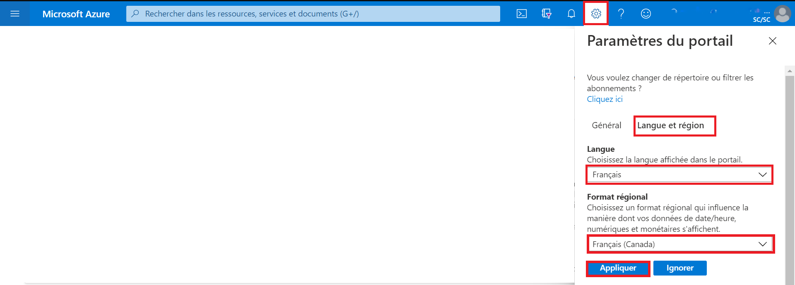
Tableau de bord
Pour accéder au tableau de bord en français de l’environnement d’Analyse collaborative (EAC), voici les étapes à suivre:
-
À partir de la liste des tableaux de bords, cliquez sur la flèche correspondant au nom du tableau de bord.
-
Sélectionnez le tableau de bord Environnement d’Analyse Collaborative dans la liste affichée.
Note: Si ce tableau de bord n'est pas dans la liste, cliquez sur Parcourir tous les tableaux de bord pour accéder à la liste complète des tableaux de bord.
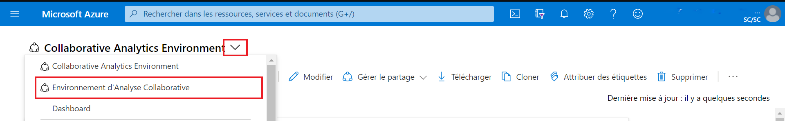
Machines Virtuelles
Serveur Windows
Pour configurer la langue d'affichage dans une machine virtuelle Windows, voici les étapes à suivre:
-
Selectionnez Paramètres.
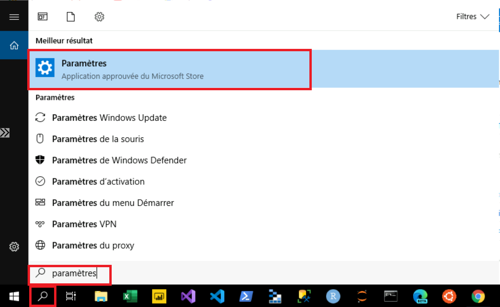
-
Sélectionnez Heure et langue.
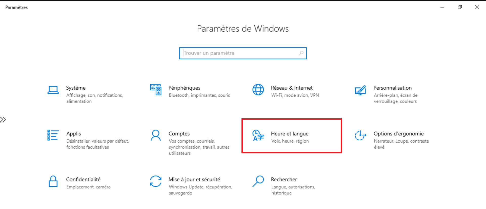
-
Sélectionnez Langue. Utilisez le menu déroulant sous l'en-tête Langue d’affichage de Windows pour choisir la langue désirée.
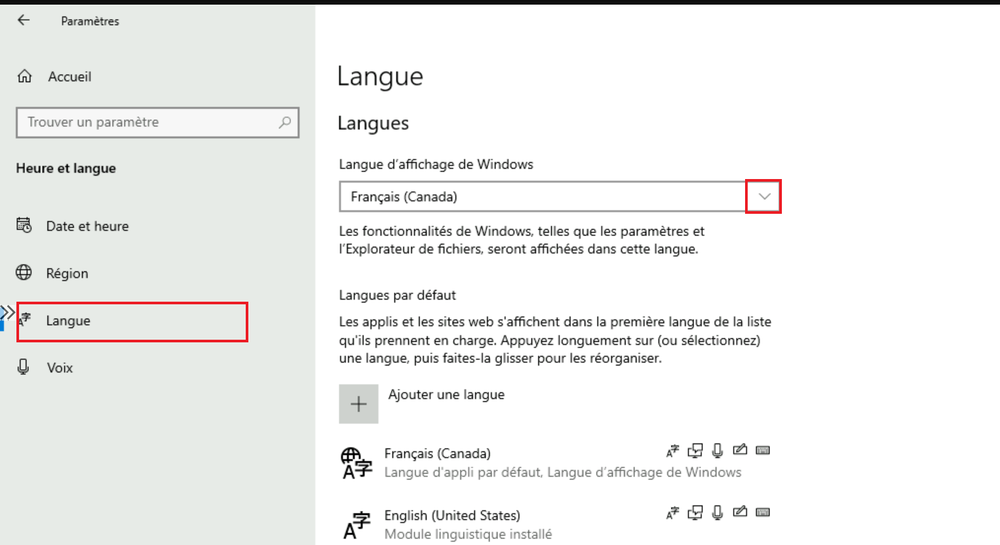
-
La zone de langue d'affichage de Windows doit maintenant comprendre la langue choisie. Pour être en mesure d'appliquer la nouvelle langue, déconnectez-vous de la session Windows actuelle, puis reconnectez-vous.
Serveur Ubuntu
Si vous utilisez l'application X2GO pour accéder à l'interface graphique de votre machine Ubuntu, notez que par défaut la session est disponible en anglais uniquement. Il sera donc necessaire d'installer des modules supplementaires de langue manuellement.
Azure Apprentissage automatique
Pour modifier les paramètres de langue dans l’espace de travail d'apprentissage automatique Microsoft Azure, voici les étapes à suivre:
-
Cliquez sur le menu Paramètres dans l'en-tête de la page principale.
-
Sous Langue et formats, utilisez les menus déroulants pour choisir la langue préférée et le format régional approprié.
-
Cliquez sur le bouton Appliquer pour mettre à jour vos paramètres de langue et de format régional.
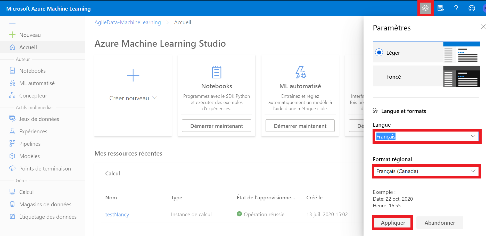
Azure Apprentissage automatique - Jupyter Lab
-
Exécutez dans le terminal d'instance de calcul Azure ML:
sh pip install jupyterlab==3 -
Redémarrez l'instance de calcul
-
Exécutez dans le terminal d'instance de calcul Azure ML:
sh pip install git+https://github.com/StatCan/jupyterlab-language-pack-fr_FR -
Dans JupyterLab, sélectionnez Paramètres - Langue - Français
Slack
Pour modifier les paramètres de langue dans l’application Slack, voici les étapes à suivre: 1. Cliquez sur l’icône de profil dans l'en-tête de la page principale.
-
Cliquez sur Préférences.
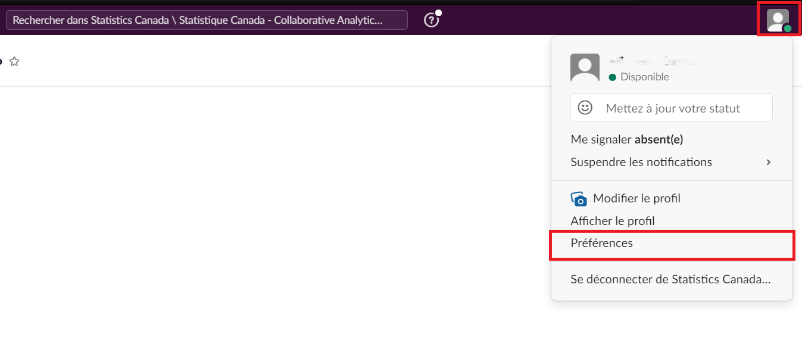
-
Sélectionnez l’onglet Langue et région.
-
Sous Langue, utilisez le menu déroulant pour choisir la langue préférée.
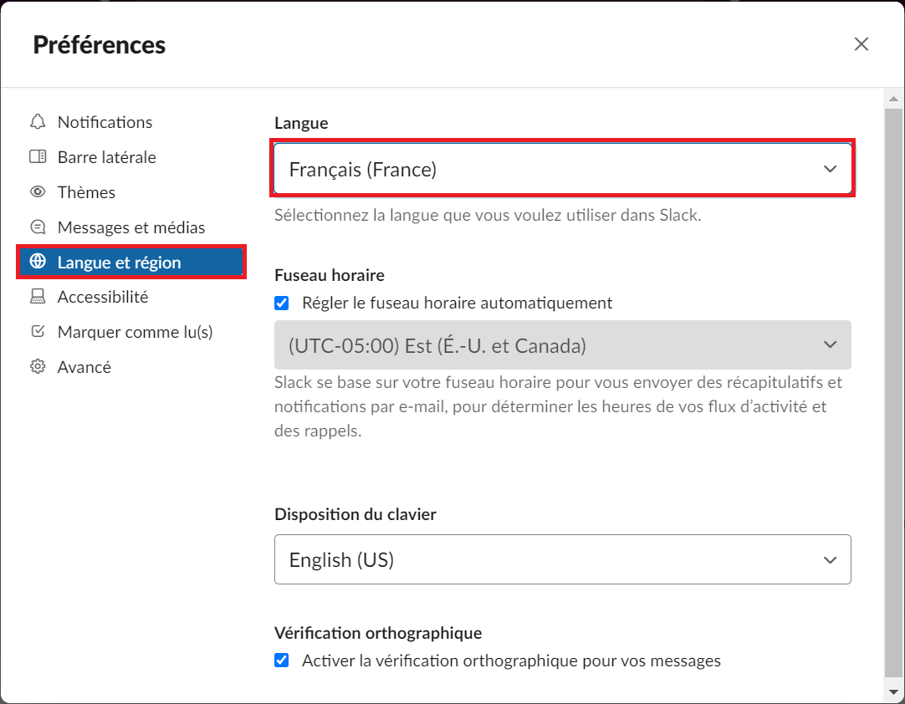
-
Fermez la fenêtre Préférences.
Explorateur de stockage Microsoft Azure
Par défaut, cette application détermine la langue d'utilisation en fonction des préférences linguistiques définies sur votre ordinateur.
Pour modifier les paramètres de langue dans l’Explorateur de stockage Microsoft Azure, voici les étapes à suivre:
-
Cliquez sur Modifier.
-
Cliquez sur Paramètres.
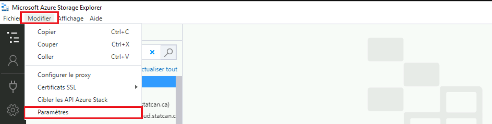
-
Dans la page des paramètres, sélectionnez Application. Sous Paramètres régionaux, utilisez le menu déroulant pour choisir votre langue préférée.
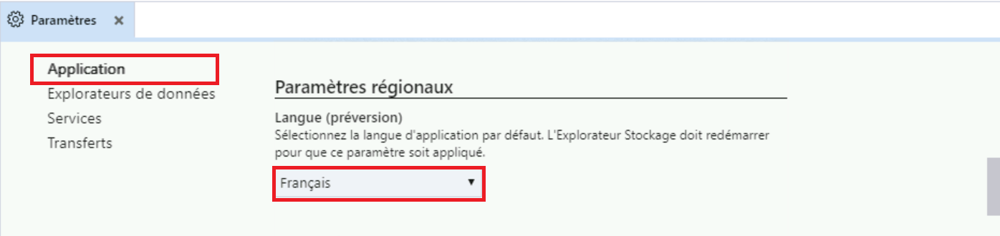
-
Pour appliquer la nouvelle langue, fermez puis relancer l’application.
Power BI
Pour obtenir plus de renseignements, vous pouvez consulter l’article « Langues et pays/régions pris en charge pour Power BI ».
Service Power BI
Par défaut, le service Power BI détermine la langue d’utilisation en fonction des préférences linguistiques définies sur votre ordinateur. Les étapes à suivre pour afficher et modifier ces préférences peuvent varier selon votre système d’exploitation et votre fureteur.
Pour changer la langue du menu dans le service Power BI, voici les étapes à suivre:
-
Dans le service Power BI, cliquez sur l’icône Paramètres, puis sélectionnez Paramètres.
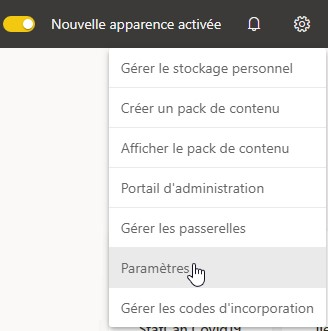
-
Sous l’onglet Général, sélectionnez Langue.
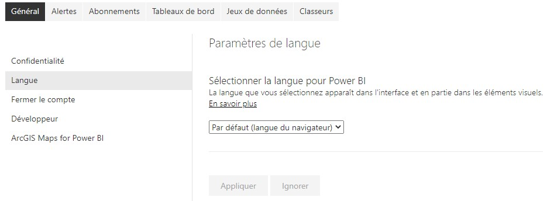
-
Sélectionnez votre langue préférée, puis cliquez sur Appliquer.
Pour obtenir plus de renseignements, consultez l’article « Langues disponibles pour le service Power BI ».
Power BI Desktop
Par défaut, - la Langue de l'application est fondée sur la Langue de Windows - la Langue du modèle est fondée sur la Langue de l'application - les étapes de la requête sont fondées sur la Langue de l'application
Il est recommandé de fixer la langue du modèle à English (United States).
La langue du modèle s'applique seulement au moment de la création du rapport et ne peut pas être changée dans les rapports existants. Ainsi, il est recommandé de fixer la langue du modèle à English (United States), sauf si vous avez besoin d’utiliser une autre langue pour le modèle de rapport. Les comparaisons de chaîne de caractères et les champs de date internes sont affectés par cette configuration.
Pour changer la langue du menu et la langue du modèle dans Power BI Desktop, voici les étapes à suivre:
-
Ouvrez le menu Options.

-
Sous GLOBAL, cliquez sur Paramètres régionaux, et fixez la langue de l’application et la langue du modèle à la langue souhaitée.
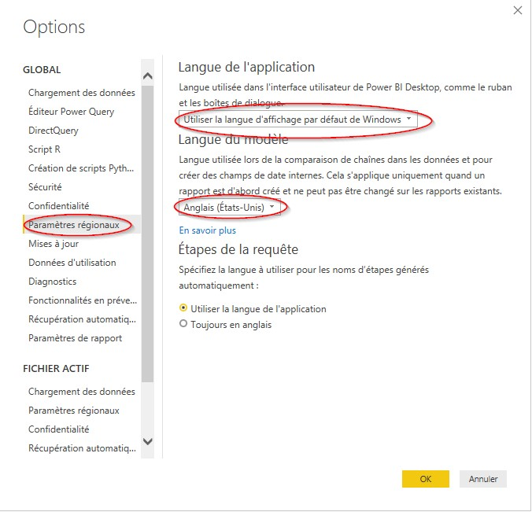
NOTE: La langue d'importation des données est fixée séparément dans les Paramètres régionaux de la section FICHIER ACTIF. Vous devez la changer seulement si vous importez des fichiers de données comportant des nombres ou des dates suivant des paramètres régionaux précis (p. ex. le format de date JJ/MM/AAAA de l’anglais du Canada et le format de date MM/JJ/AAAA de l’anglais des États-Unis).
Azure Databricks
Pour modifier les paramètres de langue dans Databricks:
-
Sélectionnez le menu déroulant de l'utilisateur en haut à droite et sélectionnez Paramètres utilisateur.
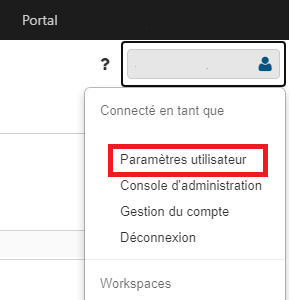
-
Sur la page, sélectionnez Paramètres de langue.

-
Cliquez sur la liste déroulante et sélectionnez la langue de votre choix.
Azure Data Factory
Pour configurer la langue, voici les étapes à suivre:
-
Dans Azure Data Factory, sélectionnez Paramètres.
-
Sélectionnez Français.
-
Cliquez sur Appliquer.
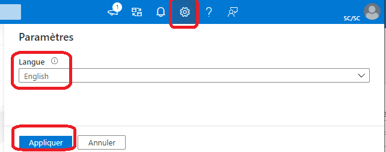
JupyterLab
Pour modifier les paramètres de langue dans JupyterLab:
-
Dans JupyterLab, ouvrez une console ou un terminal.
-
Installez l'exemple de langue de votre choix à l'aide de pip.
Exemple:
python pip install jupyterlab-language-pack-fr-FR -
Sous settings, mettez en surbrillance Language et sélectionnez la langue que vous avez installée.
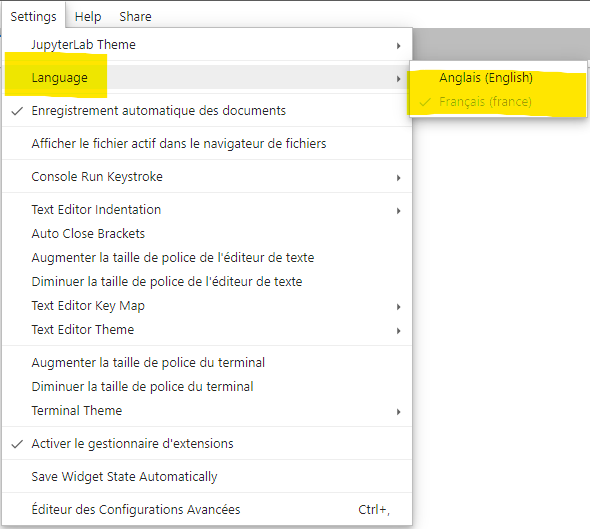
-
Cliquez sur OK pour rafraîchir la page, vous verrez le changement de langue.
Pour plus d'informations sur le changement de langue:
https://jupyterlab.readthedocs.io/en/stable/user/language.html#changing-the-display-language
Visual Studio Code (VSCode)
Pour changer la langue d'affichage dans VSCode:
-
Ouvrez VSCode et ouvrez la palette de commandes (Ctrl+Maj+P).
-
Dans la palette de commandes, tapez "affichage" et sélectionnez installer des langues supplémentaires
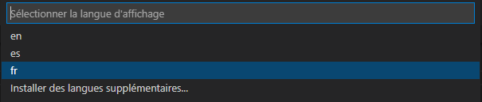
Remarque : si vous avez déjà installé la langue souhaitée, vous pouvez la sélectionner dans la liste déroulante.
-
Sur le côté gauche de VSCode, les langues qui peuvent être installées apparaîtront, sélectionnez la langue de votre choix.
-
Une fenêtre contextuelle peut apparaître en bas à droite de l'écran dans laquelle vous pouvez changer la langue et redémarrera VSCode.
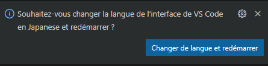
Visual Studio
Si vous avez déjà installé des packages de langue dans Visual Studio:
-
Dans la barre supérieure, sélectionnez Outils puis Options.
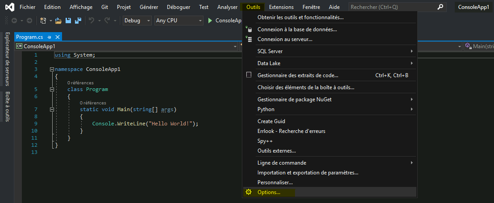
-
Dans le menu, sous l'onglet Environnement, sélectionnez Paramètres internationaux
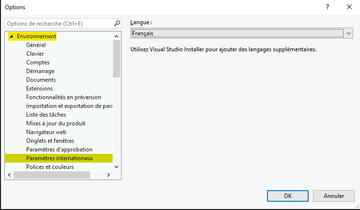
-
Dans le menu déroulant sous Langue, sélectionnez la langue de votre choix.
Si vous n'avez pas installé d'autres packages de langue dans Visual Studio :
-
Sur votre ordinateur, ouvrez le programme d'installation de Visual Studio.
-
Dans le programme d'installation, sélectionnez le bouton Modifier.
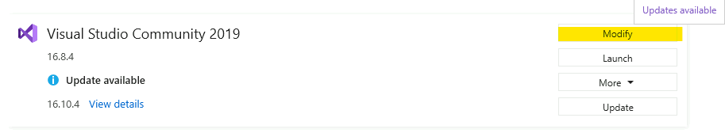
-
Dans la nouvelle fenêtre, sélectionnez Packs linguistiques. Sélectionnez toutes les langues que vous souhaitez ajouter, puis sélectionnez modifier.
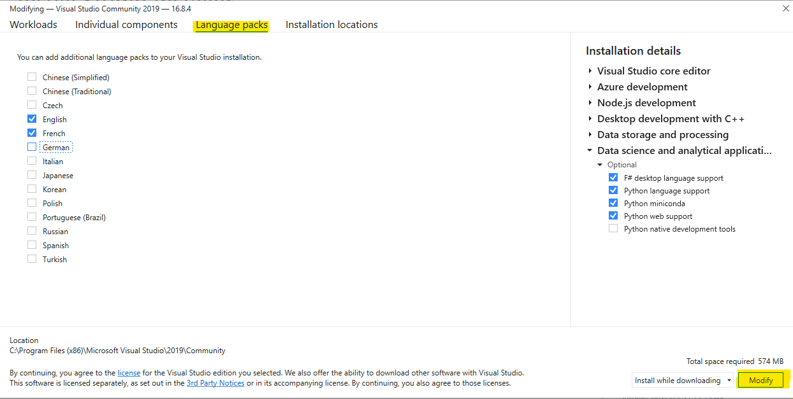
-
À partir de là, vous pouvez suivre les étapes d'utilisation des packages de langue installés dans Visual Studio.
Pour configurer RStudio dans une autre langue :
-
Ouvrez RStudio et ouvrez la console.
-
Dans la console, tapez "Sys.getenv(LANGUAGE = "fr") Note : "fr" est pour la langue française, pour une liste d'autres langues qui peuvent être utilisées :
https://en.wikipedia.org/wiki/List_of_ISO_639-1_codes
- Pour le tester, vous pouvez taper "2+x" et cela devrait donner une erreur dans la langue saisie.